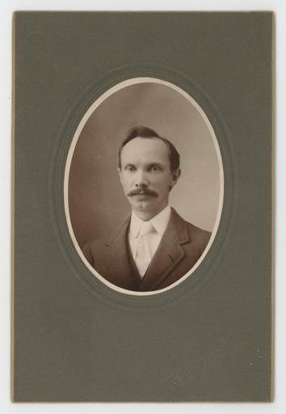
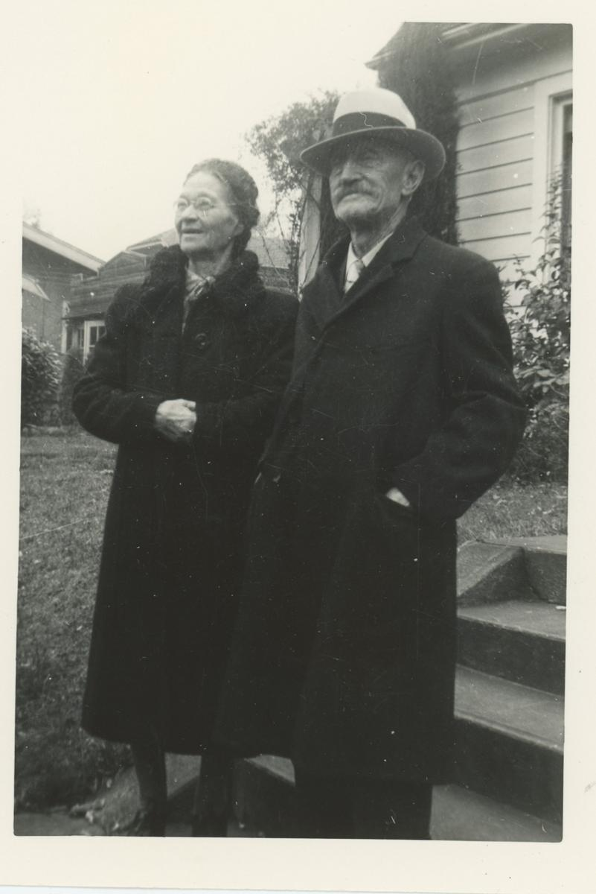

Thomas Edward Hartley
T. E. Hartley
- brick-wall
- railroad
- Born
- 1840~ - New York 1
- Married
- 1871-02/1871-03 - Fairview 2
Family
Ancestor fan
See descendants of Thomas Edward Hartley →
Descendants of Thomas Edward Hartley - click a name to open that person; use −/+ to collapse or expand.
Biography
Thomas Edward Hartley was born about 1840 in New York 1, the son of Caleb Comstock Hartley and Chastina Augusta Reed; in 1850 he was living with them in Easton, Washington County, New York 3 4.
He spent most of his adult life in Fairview, Kansas. He married Margaret A. Cole there early in 1871 2, and the 1880 census records him as a bookkeeper for the Plains Junction Railroad, living with Margaret and their daughters Ethel and Frances 1. In 1882 he was a member of the Fairview Masonic Lodge 5.

Timeline
1840s
- 1840~ - birth: Thomas Hartley born about 1840 in New York 1
- 1840~ - birth: Thomas E. Hartley born about 1840 in New York 3
1850s
- 1850-08-14 - residence: Caleb C. Hartley household residing in Easton, Washington County, New York, New York (1850) 3
1870s
1880s
- 1880-06 - residence: Hartley household residing in Fairview, Kansas (1880) at Fairview City, Breton, Kansas 1
- 1880-06 - occupation: Thomas Hartley - occupation: bookkeeper, Plains Junction Railroad at Fairview City, Breton, Kansas 1
- 1880-06 - relationship: Ethel Hartley is a child of Thomas Hartley and Margaret Cole 1
- 1880-06 - relationship: Frances Hartley is a child of Thomas Hartley and Margaret Cole 1
- 1882 - relationship: Member, Fairview Masonic Lodge No. 12 (1882 roster) 5
- 1882 - relationship: Thomas Hartley and Charley Layng were fellow lodge members (associates) 5
Undated
Photographs

Research Notes
His death has not been found. The family remembers him living to a great age in Fairview; the Breton County probate index is the next place to look.
Friends & Family
Parents
- Caleb Comstock Hartley
- Chastina Augusta Reed
Spouses
- Margaret A. Cole
Children
- Calvin George Hartley
- Ethel Hartley
- Frances Hartley
Associates
Sources
- 1880 U.S. Census - Hartley household, Fairview, Kansas
- Marriage notice - Thomas Hartley & Margaret Cole, 1871
- 1850 U.S. Census - Caleb Hartley household, Easton, New York
- Parents of Thomas Edward Hartley - proof argument
- Fairview Masonic Lodge roster, 1882
- Hartley family notes - typescript, circa 1940
- Studio portrait of Thomas Edward Hartley, circa 1895